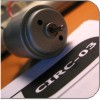
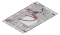
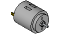
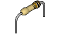

CIRC
03
.:Spin Motor Spin:.
.:Transistor & Motor:.

(ARDX) .:Arduino Experimentation Kit:. (ARDX)
What We're Doing
The Arduino's pins are great for directly controlling small electric items like LEDs. However, when dealing with larger items (like a toy motor or washing machine), an external transistor is required. A transistor is incredibly useful. It switches a lot of current using a much smaller current. A transistor has 3 pins. For a negative type (NPN) transistor, you connect your load to collector and the emitter to ground. Then when a small current flows from base to the emitter, a current will flow through the transistor and your motor will spin (this happens when we set our Arduino pin HIGH). There are literally thousands of different types of transistors, allowing every situation to be perfectly matched. We have chosen a P2N2222AG a rather common general purpose transistor. The important factors in our case are that its maximum voltage (40v) and its maximum current (200 milliamp) are both high enough for our toy motor (full details can be found on its datasheet http://ardx.org/2222).
(The 1N4001 diode is acting as a flyback diode. For details on why its there visit: http://ardx.org/4001)
The layout picture includes a capacitor that is not in either the parts list or schematic. The component is optional. It is used to smooth the power flow when the motor is turned on and off. See https://en.wikipedia.org/wiki/Filter_capacitor for more information.
The Circuit
The Parts
|  | CIRC-03 Breadboard Sheet x1 |
2 Pin Header x4 |
Transistor P2N2222AG(TO92) x1 |
Wire | |||
|  | Toy Motor x1 |
Diode (1N4001) x1 |
 | 2.2k Ohm Resistor Red-Red-Red x1 |
|||
Schematic
Resources
.:download:.
Breadboard layout sheet
http://ardx.org/BBLS03
Fritzing diagram
https://wcrsyyc.github.io/ardx/fritzing/CIRC03.fzz
.:view:.
assembly video
http://ardx.org/VIDE03
Code (no need to type everything in just)
Download the Code from ( https://wcrsyyc.github.io/ardx/code/CIRC03-code.txt )
(and then copy the text and paste it into an empty Arduino Sketch)
/* -----------------------------------------------------------
* | Arduino Experimentation Kit Example Code |
* | CIRC-03 .: Spin Motor Spin :. (Transistor and Motor) |
* -----------------------------------------------------------
*
* The Arduino's pins are great for driving LEDs however if you hook
* up something that requires more power you will quickly break them.
* To control bigger items we need the help of a transistor.
* Here we will use a transistor to control a small toy motor
*
* http://tinyurl.com/d4wht7
*
*/
int motorPin = 9; // define the pin the motor is connected to
// (if you use pin 9,10,11 or 3you can also control speed)
/*
* setup() - this function runs once when you turn your Arduino on
* We set the motors pin to be an output (turning the pin high (+5v) or low (ground) (-))
* rather than an input (checking whether a pin is high or low)
*/
void setup()
{
pinMode(motorPin, OUTPUT);
}
/*
* loop() - this function will start after setup finishes and then repeat
* we call a function called motorOnThenOff()
*/
void loop() // run over and over again
{
motorOnThenOff();
//motorOnThenOffWithSpeed();
//motorAcceleration();
}
/*
* motorOnThenOff() - turns motor on then off
* (notice this code is identical to the code we used for
* the blinking LED)
*/
void motorOnThenOff(){
int onTime = 2500; //the number of milliseconds for the motor to turn on for
int offTime = 1000; //the number of milliseconds for the motor to turn off for
digitalWrite(motorPin, HIGH); // turns the motor On
delay(onTime); // waits for onTime milliseconds
digitalWrite(motorPin, LOW); // turns the motor Off
delay(offTime); // waits for offTime milliseconds
}
/*
* motorOnThenOffWithSpeed() - turns motor on then off but uses speed values as well
* (notice this code is identical to the code we used for
* the blinking LED)
*/
void motorOnThenOffWithSpeed(){
int onSpeed = 200; // a number between 0 (stopped) and 255 (full speed)
int onTime = 2500; //the number of milliseconds for the motor to turn on for
int offSpeed = 50; // a number between 0 (stopped) and 255 (full speed)
int offTime = 1000; //the number of milliseconds for the motor to turn off for
analogWrite(motorPin, onSpeed); // turns the motor On
delay(onTime); // waits for onTime milliseconds
analogWrite(motorPin, offSpeed); // turns the motor Off
delay(offTime); // waits for offTime milliseconds
}
/*
* motorAcceleration() - accelerates the motor to full speed then
* back down to zero
*/
void motorAcceleration(){
int delayTime = 50; //milliseconds between each speed step
//Accelerates the motor
for(int i = 0; i < 256; i++){ //goes through each speed from 0 to 255
analogWrite(motorPin, i); //sets the new speed
delay(delayTime); // waits for delayTime milliseconds
}
//Decelerates the motor
for(int i = 255; i >= 0; i--){ //goes through each speed from 255 to 0
analogWrite(motorPin, i); //sets the new speed
delay(delayTime); // waits for delayTime milliseconds
}
}
Not Working? (3 things to try)
Motor Not Spinning?
If you sourced your own transistor, double check with the data sheet that the pinout is compatible with a P2N2222AG (many are reversed).
Still No Luck?
If you sourced your own motor, double check that it will work with 5 volts and that it does not draw too much power.
Still Not Working?
Sometimes the Arduino board will disconnect from the computer. Try un-plugging and then re-plugging it into your USB port.
Making it Better?
Controlling Speed:
We played with the Arduino's ability to control the brightness of an LED earlier, now we will use the same feature to control the speed of our motor. The Arduino does this using something called Pulse Width Modulation (PWM). This relies on the Arduino's ability to operate really, really fast. Rather than directly controlling the voltage coming from the pin, the Arduino will switch the pin on and off very quickly. In the computer world this is going from 0 to 5 volts many times a second, but in the human world we see it as a voltage. For example if the Arduino is PWM'ing at 50% we see the light dimmed 50% because our eyes are not quick enough to see it flashing on and off. The same feature works with transistors. Don't believe me? Try it out.
In the loop() section change it to this
// motorOnThenOff(); motorOnThenOffWithSpeed(); //motorAcceleration();
Then upload the program. You can change the speeds by changing the variables onSpeed and offSpeed.
Accelerating and decelerating:
Why stop at two speeds, why not accelerate and decelerate the motor. To do this simply change the loop() code to read
// motorOnThenOff(); // motorOnThenOffWithSpeed(); motorAcceleration();
Then upload the program and watch as your motor slowly accelerates up to full speed then slows down again. If you would like to change the speed of acceleration, change the variable delayTime (larger means a longer acceleration time).